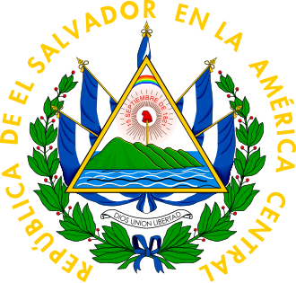
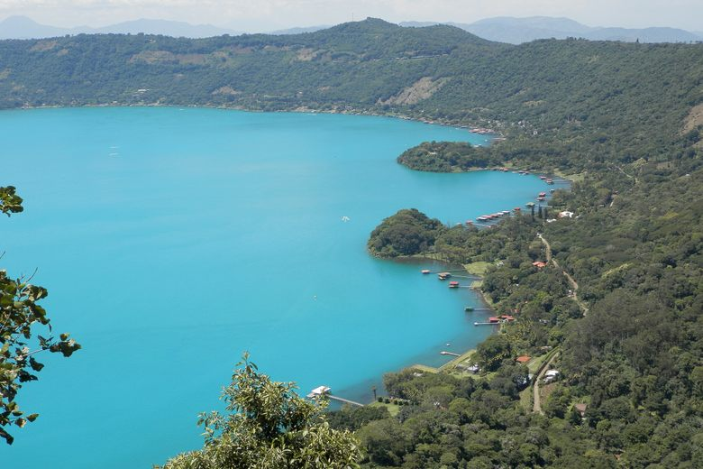
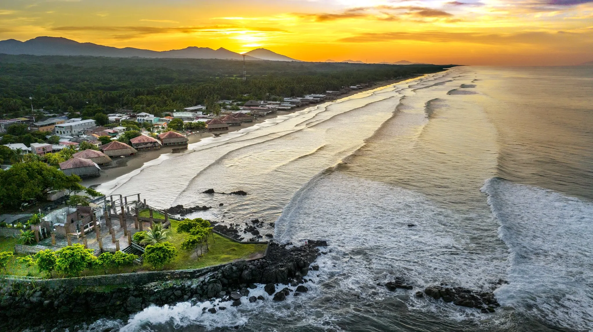
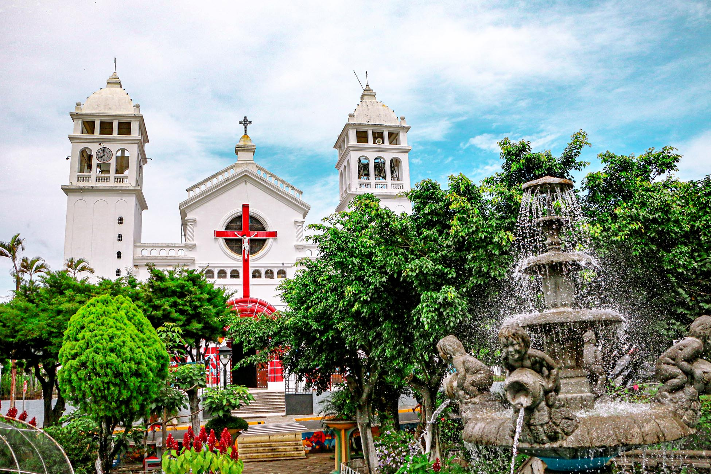

Think about it
When you hear “El Salvador”, what comes to mind? This site is a companion to the talk, so you can re-read topics, look up details, and remember the flow later.
El Salvador has been described through many lenses: war, migration, gangs, security, Bitcoin, tourism. All of those are part of the story, but none of them alone defines the country.
When you hear “El Salvador”, what comes to mind? This site is a companion to the talk, so you can re-read topics, look up details, and remember the flow later.
Jaime Serrano - Salvadoran, software engineer, and graduate student.
Everything here comes from lived experience, family ties, and a deep connection to El Salvador.
“El Salvador is small in size, but enormous in heart.”
We call it “El Pulgarcito de América” (the Little Thumb of the Americas). Small, yes, but full of contrast.
Central America, bordered by Guatemala and Honduras, facing the Pacific Ocean.
About 8,100 square miles, the smallest country in Central America.
About 6.3 million people across 14 departments.
Volcanoes, crater lakes, mountains, valleys, and a long Pacific coastline famous for surfing.
Spanish is the official language. Nawat (an Indigenous language) is endangered, but cultural programs and communities work to preserve it.
Christianity (Catholic and Evangelical) has shaped celebrations, values, and social organization. For many, churches were also places of refuge during difficult times.
Symbols in El Salvador are not just ceremonial. They connect history, nature, and shared ideals.


A national flower that is also edible and present in traditional dishes, a simple way nature shows up in daily life.
A tree known for blooming beautifully even in dry seasons, often seen as a symbol of resilience.
The national bird, known for mating for life. It often represents loyalty, freedom, and beauty.
Where we come from, in a few key milestones.
Pedro de Alvarado leads the Spanish conquest, beginning colonial rule and deep long-term inequality.
El Salvador gains independence along with the rest of Central America.
El Salvador leaves the United Provinces of Central America and becomes an independent republic.
A major uprising of Indigenous people and peasants is followed by repression, leaving a long scar in national memory.
A 12-year armed conflict rooted in inequality and repression, intensified by Cold War politics. Over 75,000 people were killed, many disappeared, and many families fled.
The Chapultepec Peace Accords officially end the war and reshape institutions, opening a new period of democracy and rebuilding.
El Salvador adopts the US dollar, aiming to stabilize the economy and attract investment.
This section is context, not praise or condemnation. It includes outcomes people describe as positive and concerns people describe as serious.
El Salvador is governed by Nayib Bukele, first elected in 2019 and re-elected in 2024. His rise was tied to public frustration with corruption, insecurity, and traditional parties.
After years of extremely high homicide rates and extortion, a state of exception began in 2022. Many Salvadorans report feeling safe again and extortion reports decreased.
At the same time, human rights organizations raised concerns about due process and wrongful detentions.
CECOT (a large maximum-security prison) became internationally known through government media. Supporters view it as a deterrent; critics question human rights conditions and long-term sustainability.
San Salvador’s Historic Center has been cleaned and restored, boosting tourism and cultural spaces.
Rising rents and housing prices also put pressure on locals and small businesses.
The country is navigating a delicate balance between security and freedom, and how that balance is managed will shape its future. Some people describe a climate of self-censorship around public criticism, while others argue strong control is necessary after years of instability.
Mountains, volcanoes, crater lakes, surf beaches, colonial towns, coffee routes, and cloud forests. It can feel like several countries compressed into one.

Santa Ana Volcano (Ilamatepec) is the highest volcano. The hike ends with a turquoise crater lake and dramatic views.

Lake Coatepeque is a volcanic caldera lake surrounded by viewpoints and small hotels. Lake Ilopango is closer to San Salvador and volcanic in origin.

Surf towns like El Tunco, El Zonte, and La Libertad attract visitors worldwide with consistent waves, warm weather, and unforgettable sunsets.

Suchitoto is known for cobblestone streets and cultural life. Joya de Cerén (UNESCO) preserves everyday life frozen by a volcanic eruption.
Celebration is not occasional. It is part of identity: faith, family, music, parades, stories, and sharing food.
Folklore is still alive: stories are told by families, adapted by artists, and referenced in everyday conversation.

Pupusas are the national dish, but also a social experience. Other staples include tamales, yuca con chicharrón, atol, and traditional sweets made with coconut, milk, and panela.
“If you ever visit a Salvadoran home and you are not offered food, something is wrong.”
Salvadoran Spanish is fast, expressive, and full of humor. Here are some common words you might hear.
Nawat is endangered but still meaningful. Preservation efforts exist through schools, community programs, and cultural movements.
If one thing defines El Salvador beyond any headline, it is its people.
Many families built a culture of effort because survival demanded it. Community is not abstract, it is lived.
Visitors often say they arrive as tourists and leave as family, not because of luxury, but because of genuine human connection.
Despite hardship, people find humor, celebrate small moments, and keep rebuilding. That spirit is part of the country’s beauty.
El Salvador is not perfect. It is complex, real, and alive. If you remember one thing: you are always welcome in El Salvador.
Scroll back up, or use the floating button to return to the top.